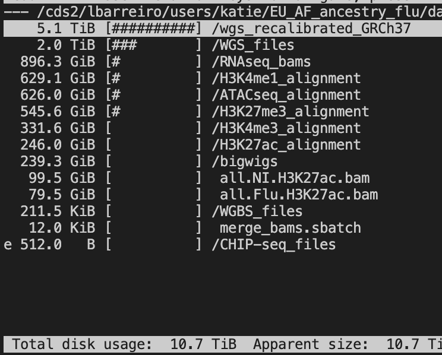

suppressMessages(library(tidyverse))suppressMessages(library(glue))PRE ="/Users/saideepgona/Library/CloudStorage/Box-Box/imlab-data/data-Github/Daily-Blog-Sai"## COPY THE DATE AND SLUG fields FROM THE HEADERSLUG="prepare_aracena_training_data"## copy the slug from the headerbDATE='2023-08-02'## copy the date from the blog's header hereDATA =glue("{PRE}/{bDATE}-{SLUG}")if(!file.exists(DATA)) system(glue::glue("mkdir {DATA}"))WORK=DATA
Context
As per my updated thesis proposal, I intend to use the Aracena et al. dataset to train personalized, context specific DL models for downstream prediction of epigenetic marks in Macrophages under controlled and flu exposure settings. Here, I outline the preparation of the training datasets from raw data shared with me by Luis’ lab.
Summary of data
Data size
The whole dataset consists of 11TB. However, whole genome sequencing actually occupies the majority of the storage as you can see.
 The actual data I need are:
RNAseq: 896.3 GB
H3K4me1: 629.1 GB
ATACseq: 626.0 GB
H3K27me3: 545.6 GB
H3K4me3: 331.6 GB
H3K27ac: 246 GB
Total: 3274.6 GB
This is only ~3 TB in total, which is much more manageable. Still, our GFPS storage doesn’t have this much permanent storage. Fortunately, I can just copy one dataset at a time, and then convert to bigwig, and delete the copies.
Files
There are different numbers of files for each dataset. Downstream, therefore, I will need to use a subset of samples for which alignments are present across measurements.
Converting BAM files to BigWig
The first step in the generation of the training data is converting the raw data BAM files into BigWig signal tracks. Fortunately, the Basenji authors have provided some utility scripts for doing this conversion (https://github.com/calico/basenji/blob/master/docs/preprocess.md#bam_cov).
I have installed these scripts to Midway2 and made a small pipeline to convert the bam files to bigwigs. The simple script is as follows:
Code
import os,sysimport timeimport globconversion_script ="/project2/haky/saideep/aracena_data_preprocessing/basenji/bin/bam_cov.py"# Load in list of files# file_list = "/project2/haky/saideep/aracena_data_preprocessing/test_conversion/file_list.txt"# bam_files = []# with open(file_list,"r") as fl:# for line in fl:# bam_files.append(line.strip())files_dir ="/cds2/lbarreiro/users/katie/EU_AF_ancestry_flu/data/H3K27ac_alignment"bam_files = glob.glob(files_dir+"/*.bam")print(bam_files)# Start main conversion looptemp_folder ="/project2/haky/saideep/aracena_data_preprocessing/test_conversion/bam_cov"output_dir ="/project2/haky/saideep/aracena_data_preprocessing/bigwigs"for bam_file in bam_files:if os.path.exists(os.path.join(output_dir,os.path.basename(bam_file).replace(".bam",".bw"))):print(os.path.join(output_dir,os.path.basename(bam_file).replace(".bam",".bw")), " already exists")continue start_time = time.time() cp_com = ["cp", bam_file, os.path.join(temp_folder, os.path.basename(bam_file)) ]print(" ".join(cp_com)) os.system(" ".join(cp_com)) cp_com_i = ["cp", bam_file, os.path.join(temp_folder, os.path.basename(bam_file)+".bai") ]print(" ".join(cp_com_i)) os.system(" ".join(cp_com_i)) bigwig_convert_com = ["python", conversion_script, os.path.join(temp_folder,os.path.basename(bam_file)), os.path.join(output_dir,os.path.basename(bam_file).replace(".bam",".bw")) ]print(" ".join(bigwig_convert_com)) os.system(" ".join(bigwig_convert_com)) rm_com = ["rm", os.path.join(temp_folder,os.path.basename(bam_file)) ]print(" ".join(rm_com)) os.system(" ".join(rm_com)) rm_com_i = ["rm", os.path.join(temp_folder,os.path.basename(bam_file)+".bai") ]print(" ".join(rm_com_i)) os.system(" ".join(rm_com_i))print("--- %s seconds ---"% (time.time() - start_time))
NOTE: Step requires a good amount of memory (24GB seems stable)
Lifting over to GRCh38 reference genome
The current alignments are aligned to the hg19 reference genome, but I intend to use the GRCh38 reference genome downstream. I therefore need to perform a liftover in order to use the BigWigs I have generated. Here I will try using CrossMap to perform the liftover. First, I downloaded the following chain file: http://hgdownload.cse.ucsc.edu/goldenpath/hg19/liftOver/hg19ToHg38.over.chain.gz.
Then, I install CrossMap to a local directory as such and then run an example. The process looks like this:
CrossMap consistently gives a bus error, and I think it is an older piece of software. I will instead try to convert bigwig to bedgraph, then perform liftover, and the convert back to bigwig. This follows the following logic as found here(https://bioinfocore.com/blogs/liftover-bigwig-files/) and uses UCSD liftover code:
Luckily this seems to be working. Had to add the bedtools merge to average out some cases where there are repeat regions (might be worth better understanding the cause)
Determining which set of of samples are in common between datasets
The following script was used to determine which set of samples are common between all 6 readouts:
Code
import os, sysimport globimport numpy as nproot ="/cds2/lbarreiro/users/katie/EU_AF_ancestry_flu/data"data_dirs = ["H3K27ac_alignment","ATACseq_alignment","H3K27me3_alignment","H3K4me1_alignment","H3K4me3_alignment","RNAseq_bams"]data_dirs_full = [os.path.join(root,x) for x in data_dirs]samples_dict = {}for d_dir in data_dirs_full: all_bams_cur = glob.glob(d_dir+"/*.bam")print(d_dir+"\*.bam") samples = ["_".join(os.path.basename(x).split(".")[0].split("_")[0:2]) for x in all_bams_cur] samples_dict[os.path.basename(d_dir)] =set(samples)[print(samples_dict)]set_list = [samples_dict[x] for x in samples_dict.keys()]common_set =set.intersection(*set_list)print(len((common_set)))print(common_set)
The result is that 54 samples (27 individuals) are present in common between the readouts. They look like this:
---title: "prepare_aracena_training_data"author: "Saideep Gona"date: "2023-08-02"date-modified: last-modifiedformat: html: code-fold: true code-summary: "Show the code"execute: freeze: true warning: false---```{r}#| label: Set up box storage directorysuppressMessages(library(tidyverse))suppressMessages(library(glue))PRE ="/Users/saideepgona/Library/CloudStorage/Box-Box/imlab-data/data-Github/Daily-Blog-Sai"## COPY THE DATE AND SLUG fields FROM THE HEADERSLUG="prepare_aracena_training_data"## copy the slug from the headerbDATE='2023-08-02'## copy the date from the blog's header hereDATA =glue("{PRE}/{bDATE}-{SLUG}")if(!file.exists(DATA)) system(glue::glue("mkdir {DATA}"))WORK=DATA```# ContextAs per my updated thesis proposal, I intend to use the Aracena et al. dataset to train personalized, context specific DL models for downstream prediction of epigenetic marks in Macrophages under controlled and flu exposure settings. Here, I outline the preparation of the training datasets from raw data shared with me by Luis' lab.## Summary of data### Data sizeThe whole dataset consists of 11TB. However, whole genome sequencing actually occupies the majority of the storage as you can see. The actual data I need are:- RNAseq: 896.3 GB- H3K4me1: 629.1 GB- ATACseq: 626.0 GB- H3K27me3: 545.6 GB- H3K4me3: 331.6 GB- H3K27ac: 246 GB- Total: 3274.6 GBThis is only \~3 TB in total, which is much more manageable. Still, our GFPS storage doesn't have this much permanent storage. Fortunately, I can just copy one dataset at a time, and then convert to bigwig, and delete the copies.### FilesThere are different numbers of files for each dataset. Downstream, therefore, I will need to use a subset of samples for which alignments are present across measurements.## Converting BAM files to BigWigThe first step in the generation of the training data is converting the raw data BAM files into BigWig signal tracks. Fortunately, the Basenji authors have provided some utility scripts for doing this conversion (https://github.com/calico/basenji/blob/master/docs/preprocess.md#bam_cov).I have installed these scripts to Midway2 and made a small pipeline to convert the bam files to bigwigs. The simple script is as follows:```{python eval=FALSE}import os,sysimport timeimport globconversion_script ="/project2/haky/saideep/aracena_data_preprocessing/basenji/bin/bam_cov.py"# Load in list of files# file_list = "/project2/haky/saideep/aracena_data_preprocessing/test_conversion/file_list.txt"# bam_files = []# with open(file_list,"r") as fl:# for line in fl:# bam_files.append(line.strip())files_dir ="/cds2/lbarreiro/users/katie/EU_AF_ancestry_flu/data/H3K27ac_alignment"bam_files = glob.glob(files_dir+"/*.bam")print(bam_files)# Start main conversion looptemp_folder ="/project2/haky/saideep/aracena_data_preprocessing/test_conversion/bam_cov"output_dir ="/project2/haky/saideep/aracena_data_preprocessing/bigwigs"for bam_file in bam_files:if os.path.exists(os.path.join(output_dir,os.path.basename(bam_file).replace(".bam",".bw"))):print(os.path.join(output_dir,os.path.basename(bam_file).replace(".bam",".bw")), " already exists")continue start_time = time.time() cp_com = ["cp", bam_file, os.path.join(temp_folder, os.path.basename(bam_file)) ]print(" ".join(cp_com)) os.system(" ".join(cp_com)) cp_com_i = ["cp", bam_file, os.path.join(temp_folder, os.path.basename(bam_file)+".bai") ]print(" ".join(cp_com_i)) os.system(" ".join(cp_com_i)) bigwig_convert_com = ["python", conversion_script, os.path.join(temp_folder,os.path.basename(bam_file)), os.path.join(output_dir,os.path.basename(bam_file).replace(".bam",".bw")) ]print(" ".join(bigwig_convert_com)) os.system(" ".join(bigwig_convert_com)) rm_com = ["rm", os.path.join(temp_folder,os.path.basename(bam_file)) ]print(" ".join(rm_com)) os.system(" ".join(rm_com)) rm_com_i = ["rm", os.path.join(temp_folder,os.path.basename(bam_file)+".bai") ]print(" ".join(rm_com_i)) os.system(" ".join(rm_com_i))print("--- %s seconds ---"% (time.time() - start_time))```NOTE: Step requires a good amount of memory (24GB seems stable)## Lifting over to GRCh38 reference genomeThe current alignments are aligned to the hg19 reference genome, but I intend to use the GRCh38 reference genome downstream. I therefore need to perform a liftover in order to use the BigWigs I have generated. Here I will try using CrossMap to perform the liftover. First, I downloaded the following chain file: http://hgdownload.cse.ucsc.edu/goldenpath/hg19/liftOver/hg19ToHg38.over.chain.gz.Then, I install CrossMap to a local directory as such and then run an example. The process looks like this:```{bash eval=FALSE}wget http://hgdownload.cse.ucsc.edu/goldenpath/hg19/liftOver/hg19ToHg38.over.chain.gzgunzip hg19ToHg38.over.chain.gzpip install CrossMap -t CrossMap_install_directorypython ./CrossMap_install_directory/bin/CrossMap.py bigwig hg19ToHg38.over.chain test.bw test_lifted.bw./CrossMap.py bigwig ../test_conversion/hg19ToHg38.over.chain /project2/haky/saideep/aracena_data_preprocessing/bigwigs/AF08_Flu_H3K27ac.sorted.dup.bw /project2/haky/saideep/aracena_data_preprocessing/hg38_bigwigs/AF08_Flu_H3K27ac.sorted.dup ```CrossMap consistently gives a bus error, and I think it is an older piece of software. I will instead try to convert bigwig to bedgraph, then perform liftover, and the convert back to bigwig. This follows the following logic as found here(https://bioinfocore.com/blogs/liftover-bigwig-files/) and uses UCSD liftover code:```{bash eval=FALSE}bigWigToBedGraph input.bw input.bedGraphliftOver input.bedGraph hg19ToHg38.over.chain input_hg38.bedgraph unMappedfetchChromSizes hg38 > hg38.chrom.sizesLC_COLLATE=C sort-k1,1-k2,2n input_hg38.bedgraph > input_hg38.sorted.bedgraphbedtools merge -o mean -c 4 -i input_hg38.sorted.bedgraph > input_hg38.sorted.merged.bedgraphbedGraphToBigWig input_hg38.sorted.merged.bedgraph hg38.chrom.sizes output.bw```Luckily this seems to be working. Had to add the bedtools merge to average out some cases where there are repeat regions (might be worth better understanding the cause)UPDATE:I am going to try to first just convert coordinates when extracting from the bigwig files rather than lifting the entire files over.## Determining which set of of samples are in common between datasetsThe following script was used to determine which set of samples are common between all 6 readouts:```{python eval=FALSE}import os, sysimport globimport numpy as nproot ="/cds2/lbarreiro/users/katie/EU_AF_ancestry_flu/data"data_dirs = ["H3K27ac_alignment","ATACseq_alignment","H3K27me3_alignment","H3K4me1_alignment","H3K4me3_alignment","RNAseq_bams"]data_dirs_full = [os.path.join(root,x) for x in data_dirs]samples_dict = {}for d_dir in data_dirs_full: all_bams_cur = glob.glob(d_dir+"/*.bam")print(d_dir+"\*.bam") samples = ["_".join(os.path.basename(x).split(".")[0].split("_")[0:2]) for x in all_bams_cur] samples_dict[os.path.basename(d_dir)] =set(samples)[print(samples_dict)]set_list = [samples_dict[x] for x in samples_dict.keys()]common_set =set.intersection(*set_list)print(len((common_set)))print(common_set)```The result is that 54 samples (27 individuals) are present in common between the readouts. They look like this:{'EU03_NI', 'AF30_NI', 'AF36_NI', 'AF20_Flu', 'EU13_NI', 'EU47_NI', 'EU41_NI', 'EU27_NI', 'AF18_Flu', 'AF22_NI', 'EU21_NI', 'EU15_Flu', 'EU25_Flu', 'AF22_Flu', 'EU25_NI', 'EU05_NI', 'EU15_NI', 'AF34_Flu', 'EU05_Flu', 'EU03_Flu', 'EU07_NI', 'EU07_Flu', 'AF24_NI', 'EU41_Flu', 'EU19_NI', 'EU19_Flu', 'AF16_Flu', 'EU27_Flu', 'EU21_Flu', 'EU09_NI', 'AF24_Flu', 'AF08_NI', 'AF26_Flu', 'AF38_Flu', 'AF34_NI', 'AF08_Flu', 'EU33_NI', 'EU13_Flu', 'AF26_NI', 'EU39_NI', 'AF20_NI', 'AF28_NI', 'AF12_Flu', 'AF18_NI', 'AF30_Flu', 'AF38_NI', 'AF12_NI', 'AF16_NI', 'EU47_Flu', 'EU33_Flu', 'AF36_Flu', 'EU09_Flu', 'AF28_Flu', 'EU39_Flu'}## Creating training HDF5 files The basenji repository contains code for converting the lifted over bigwigs into HDF5 files. I don't want to directly use their code for a few reasons. First, it's not too well documented. Second, we have our own format for how we want to store training data, and it is easier to adhere to it this way. Finally, it just gives a bit more flexibility. Still I will borrow some code in order to make my life easier here.The process I will use is as follows:For each individual and data split, I will create a single HDF5 output file. Each will contain the following datasets:1.) Matrix of personalized, one-hot sequences (input_sequence_length x 4 x num_regions) 2.) Matrix of targets (896 x 12 x num_regions)3.) Intervals (3 x num_regions)## Errors and causesIt seems like direct modifiction of arrays from functions called as part of a multiprocessing pool wasn't working as intended. Solution was to return subarrays for each function and then concatenate the list of subarrays from the output of mp.starmap into the final array. Likely is a better solution out there for distributed array construction but this should work.RuntimeError: You must supply a chromosome, start and end position. : Occurs if using the wrong set of arguments to the wrong pyBigWig function, for example: ```{python eval=FALSE}f.values(interval[0],interval[1],interval[2], type="mean")```type is not a valid argument, but instead of saying that, it just errors out like aboveRuntimeError: Invalid interval bounds! : For example, Error reading bigwig file: /project2/haky/saideep/aracena_data_preprocessing/bigwigs/EU33_Flu_RNAseq.sorted.mdup.bw chr18:1050113-1050241:.Invalid interval bounds!Might help to look at the bam file for this region:```{bash eval=FALSE}module load samtoolssamtools depth -a-r 18:1050113-1050241 EU33_Flu.sorted.mdup.bam```Running this command yields nullas below:[sgona@midway2-login1 RNAseq_bams]$ samtools depth -a -r 18:1050113-1050241 EU33_Flu.sorted.mdup.bamExpanding the interval shows similar at the original region:[sgona@midway2-login1 RNAseq_bams]$ samtools depth -r 18:1041997-1050241 EU33_Flu.sorted.mdup.bam |tail18 1042001 218 1042002 218 1042003 218 1042004 218 1042005 218 1042006 218 1042007 218 1042008 218 1042009 118 1042010 1HOWEVER, using the -a flag in conjuntion with an expanded interval yields expected behavior of empty coverage:[sgona@midway2-login1 RNAseq_bams]$ samtools depth -a -r 18:1041997-1050241 EU33_Flu.sorted.mdup.bam |tail18 1050232 018 1050233 018 1050234 018 1050235 018 1050236 018 1050237 018 1050238 018 1050239 018 1050240 018 1050241 0As you can see, the output cuts off at that region depending on the interval supplied, which is odd. I decided to just consider the coverage to be zero if such cases arise.### Useful pyBigWig commandspyBigWig.open(bw).values(chrom, start, end): Lists the actual values in a rangepyBigWig.open(bw).stats(chrom, start, end, type="mean"): Summarizes values in a range, default type is mean.pyBigWig.open(bw).chroms(): Lists chromosomes in bigwig file as well as chrom lengths## Runtime considerations for generating targetsFrom my test cases, it seems like the average runtime for a single sequence window for 1 individual, all tracks, and with 10 cores is about 4 seconds. This means that for 38000 sequence windows corresponding to all the basenji intervals for a single individual, $4*38000/60/60 = 42 hours$ is required.For this reason, I think it makes sense to split these 38000 sequences into test, validation, and multiple train subsets to speed up execution. The train subsets can be merged together later.This way, the process can be parallelized as follows:At the job submission level, 1 job can be submitted for each combination of individual, data_split(e.g. train, test, val. etc.). ßß### Code for multiple train subsets```{r}```## Memory consumption